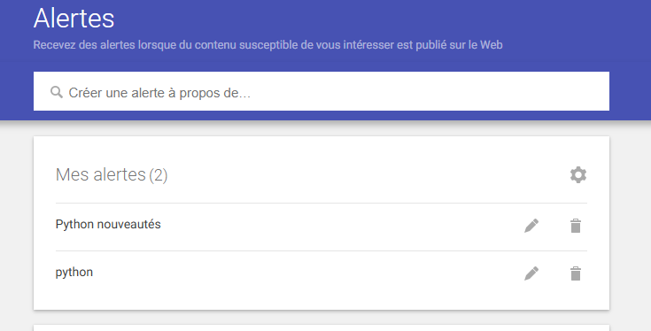
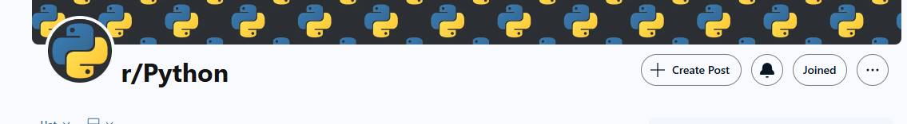
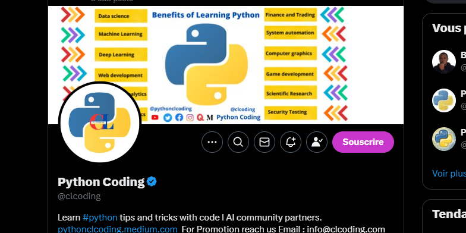
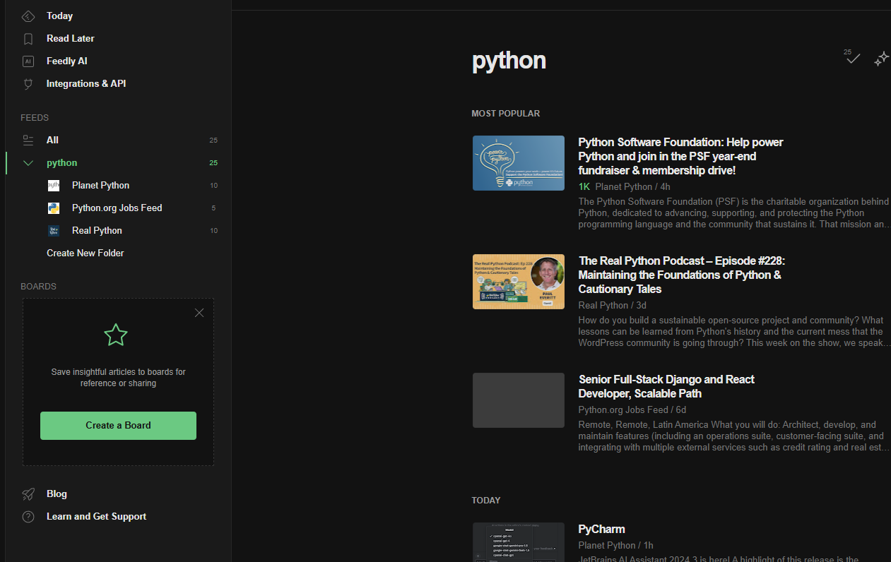

Ma veille technologique
Qu'est ce qu'une veille technologique?
Une veille technologique consiste à s'organiser pour se tenir constament informé des évolutions technologiques, des tendances et des nouveautés dans un domaine spécifique.
Comment faire sa veille ?
Pour une veille technologique on utilise des outils pour regrouper des informations (agrégateur rss), les plateformes d'actualités par exemple les articles spécialisés, les réseaux sociaux: twitter, reddit.. , et les alertes personnalisées sont particulièrement utiles pour rester à jour on peut notamment cité Google Alerts .
Ma veille technologique



